En este ejercicio hay que acabar entregando una carpeta con el nombre del alumno y que contenga:
las capturas de pantalla del escritorio completo (que se llamen X-Y.png donde X sea el número de ejercicio e Y el número de captura del ejercicio). Haga capturas:
de la página o el programa en la que ha resuelto cada ejercicio
del resultado obtenido en la aplicación
el fichero estilo.txt del ejercicio 8.
el fichero alias.txt del ejercicio 9.
la carpeta de la aplicación (comprimida en un zip) del ejercicio 10.
En los enunciados de los ejercicios se muestran capturas parciales como ayuda, pero las capturas que se entreguen en el examen deben ser capturas de toda la pantalla.
Descomprima MyBB y mueva la carpeta de la aplicación a la carpeta de aplicaciones web utilizada durante el curso. Llame a la carpeta /mybb-su-nombre (sin acentos).
Cree con phpMyAdmin en MySQL/MariaDB el usuario iaw_mybb, con contraseña iaw_mybb y base de datos iaw_mybb.
Instale MyBB abriendo la página correspondiente:
Utilice el usuario de MySQL/MariaDB iaw_mybb.
Llame al foro "Foro WebApps de SuNombre".
Cree el usuario administrador con nombre de usuario admin y contraseña admin y cuenta de correo ficticia.
Haga una captura nada más terminar la instalación:
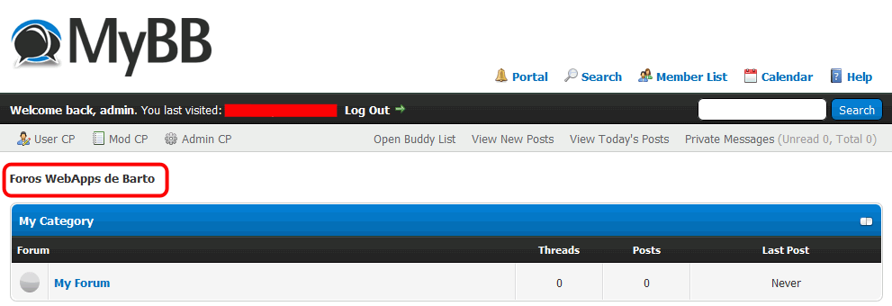
2. Configuración del sitio (0,5 puntos)
Descargue la traducción al español de MyBB: MyBB es 19.
Instale la traducción al español.
Cambie el idioma del sitio al español:
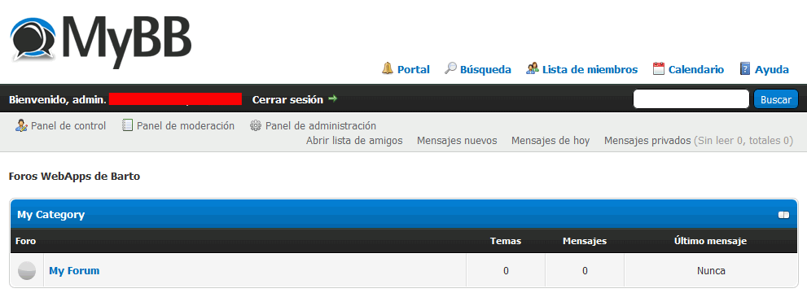
3. Crear elementos (1 punto)
Cree la siguiente estructura de foros:
Generales
Sobre Foros WebApps: para temas generales de la web
Nuevas aplicaciones y versiones: para informar de la aparición de nuevas aplicaciones y versiones
Consultas
Infraestructura (Apache, MySQL/MariaDB, etc.): para preguntas y respuestas sobre servidores
WordPress: para preguntas y respuestas sobre WordPress
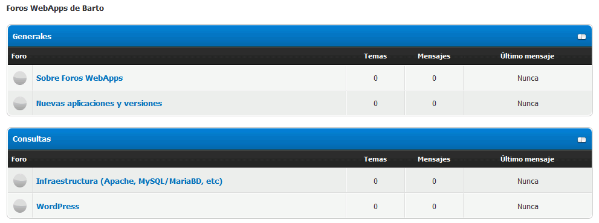
Cree tres usuarios registrados, experto-1, grosero-1 y novato-1, ambos con contraseña password:
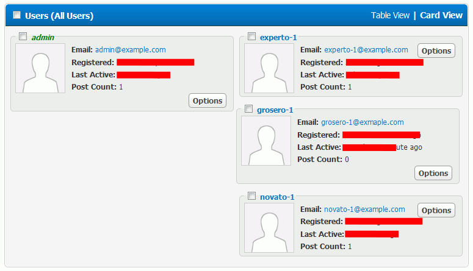
Cree una pregunta y respuesta por parte de estos usuarios en uno de los foros:
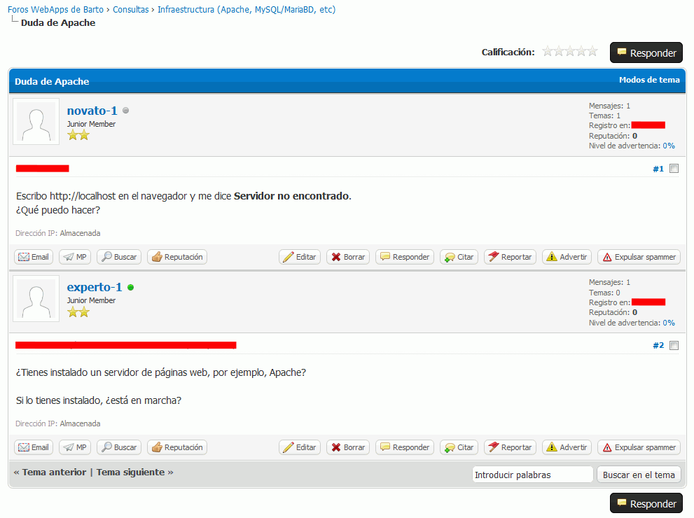
4. Calendario (0,5 puntos)
Configure el calendario existente y cree un evento en el día de hoy:
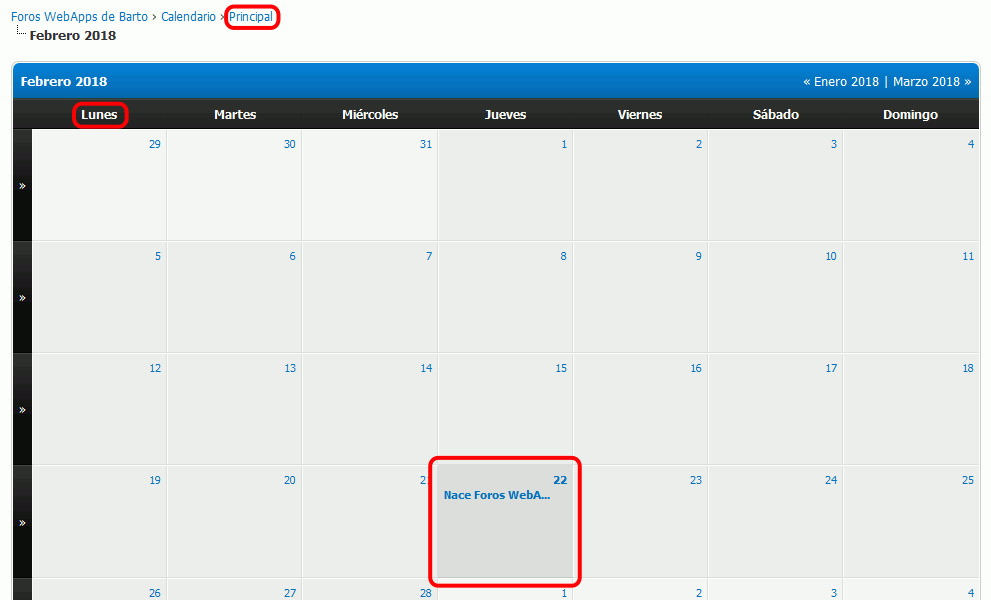
Configure el calendario de manera que los usuarios experto-1 y novato-1 no puedan añadir eventos:
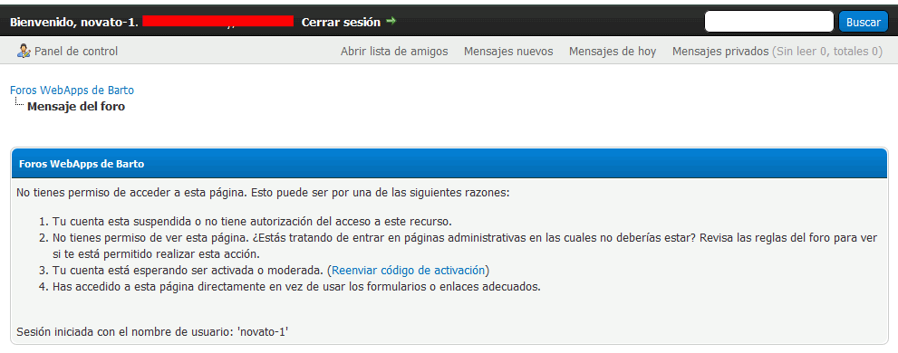
5. Plugins (1 punto)
Instale el plugin Fireworks, que añade una animación a la portada: MyBB Fireworks 5.
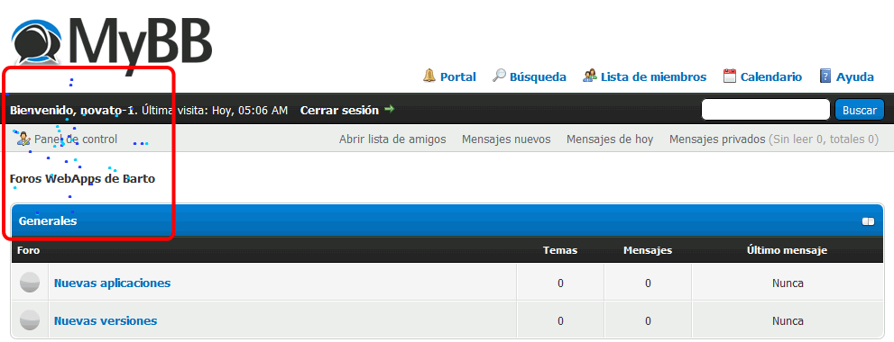
6. Encuesta (0,75 puntos)
Cree una encuesta sobre la próxima aplicación a la que dedicar un foro:
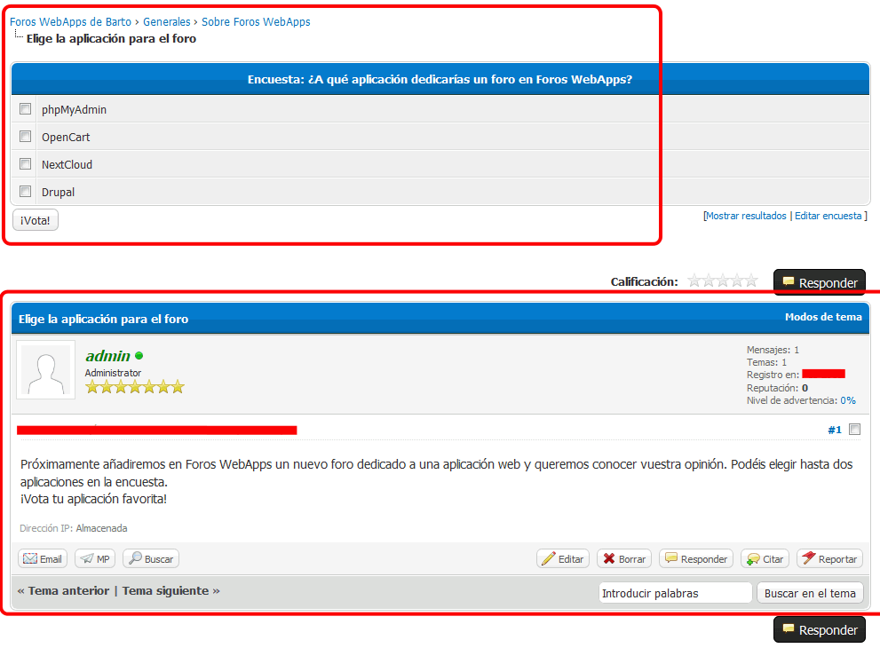
7. Usuarios maleducados (0,75 puntos)
Como usuario grosero-1, abra un tema inapropiado:
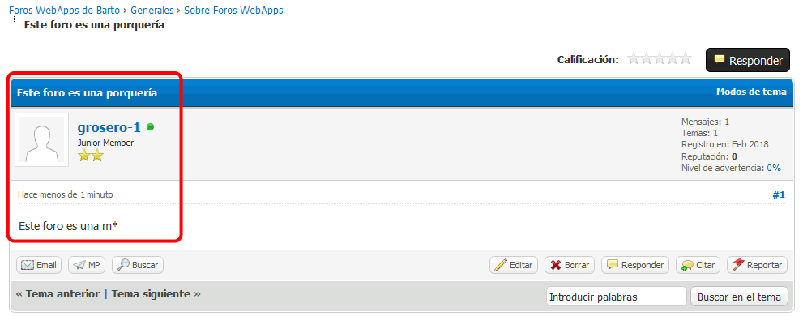
Impida el acceso al foro de usuario grosero-1:
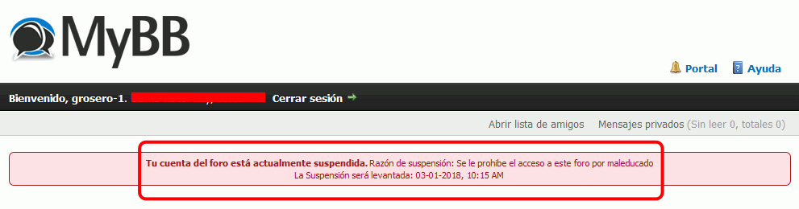
Elimine el tema abierta por grosero-1:
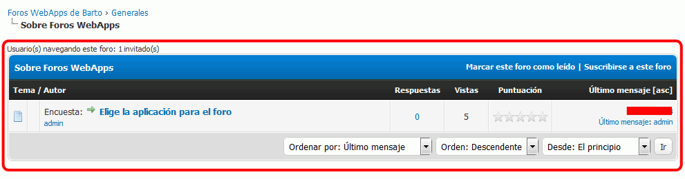
8. Modificar estilos (1,25 puntos)
Modifique el estilo predeterminado de MyBB.
Cambie el logotipo ()
Cambie los colores siguientes, modificando simplemente ficheros que se encuentran en el directorio /cache.
Nota: Los colores empleados en el ejemplo son
hsl(120, 100%, 75%),
hsl(120, 80%, 50%) y
hsl(120, 100%, 25%).
Cree un fichero estilo.txt con las reglas añadidas o modificadas.
9. Alias (0,5 puntos)
Cree un alias para poder acceder a mybb mediante la dirección http://localhost/foro.
Escriba un fichero alias.txt con el alias que ha creado.
Entre como usuario administrador.
10. Copia de seguridad (0,5 puntos)
Haga una copia de seguridad completa de la base de datos iaw_mybb.